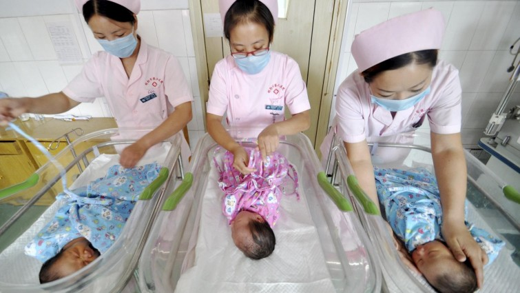
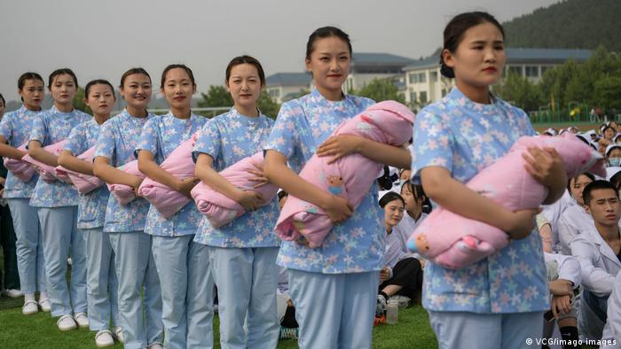
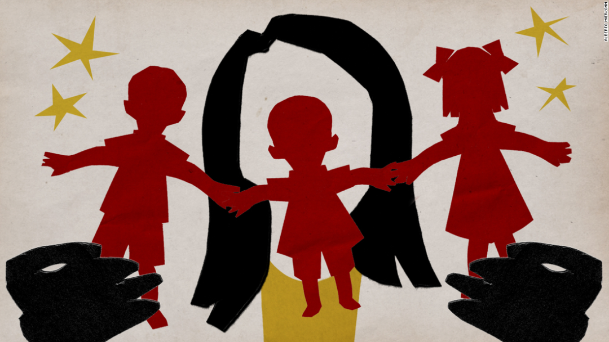

我们对三胎政策各有见解，去看了一下外媒都怎么说

好好：二零一五年，我毕业后顺利入职一家中型企业，公司有一个不成文规定：女员工入职后两年内不要怀孕生小孩。辗转六载过去，我也逐渐靠近了社会意义上的“适婚年龄”，切身感受到了婚育上实实在在的压力。
只有各个城市里的精英家庭，或足够有钱，或有社会地位，多养一个孩子只有好处，而不是又来一个碎钞机。当下生活压力有多大不言自明，房价、幼儿园的托管费用、补习班费用都可能是压垮人的最后一根稻草，如何有勇气再孕育一个小生命？
小庄：在我的职业生涯中见到过许多有天赋又刻苦的女性。为了和男性竞争相同的机会，她们不得不付出更多的努力。但目前几乎所有国家的文化中，生育成本都默认为全部由女性承担，造成这些女性在职场多年的努力，在决定生育的一瞬间全部付诸东流。
即使在西方福利国家，关于“如何量化生养成本并由社会和家庭，以及家庭中的男性和女性共同分担”，也争议不断。我个人认为，在社会真正承认女性生育成本并有实际补偿计划以前，一切生育鼓励政策都是耍流氓——这也包括一些国外的生育鼓励政策。
中共中央政治局5月31日召开会议，听取“十四五”时期积极应对人口老龄化重大政策举措汇报，审议《关于优化生育政策促进人口长期均衡发展的决定》。
会议指出，此前实施的单独两孩、全面两孩政策等重大决策部署取得积极成效。近年来人口老龄化程度加深，进一步优化生育政策，实施一对夫妻可以生育三个子女政策及配套支持措施，有利于改善我国人口结构、落实积极应对人口老龄化国家战略、保持我国人力资源禀赋优势。

(picture alliance / Hao Qunying)这项在六一儿童节前出台的政策不仅在国内引起了巨大的反响，也引起了外国媒体的广泛关注。以往的文章中，大多都是从国内的角度去看待三胎政策，这次小编们纵览各国媒体发言，节选了具有代表性的国外文章，换一个角度去看待此次的三胎政策，希望能让读者有新的心得体会。
法兰克福汇报认为这项政策的实质是子宫国有化。政府认为通过产假，对母亲的保护，家庭税收政策，住房政策，以及对工作女性的支持，可以鼓励女性生育。但此次公告并没有提及具体的措施，所以社会对三孩政策的反应也以怀疑态度为主。在中国，家庭和职业的平衡问题仅涉及女性，男性没有育儿假。随着女性受教育程度和职业预期越来越高，中国也出现了生育推迟。但中国政府没有投入更多幼儿托管及其他鼓励政策，反而越来越强调传统家庭观念。
德国广播电台认为，三孩政策虽然旨在解决老龄化问题，但解决方法并不是增强养老和社会保障系统，而是把责任全部推给了女性，本质上与独生子女政策并无不同。同时，社会对女性的系统性歧视严重，比如招聘性别歧视。而中国政府最高层几乎未出现过女性决策者，所以在可以预计的未来，家庭政策仍将无视女性的境遇。

(图片来源于德国之声)BBC认为，过去中国施行的独生子女政策很大程度上影响了这几十年来的人口变化趋势，也因而出现了诸如遗弃女婴、流产女胎的现象，导致了现如今的性别比例失衡，适龄生育女性进一步减少。
澳大利亚非营利性网络媒体“The Conversation”发文表示，三孩政策的目的是缓解人口老龄化和人口出生率放缓，但生育三胎对职业妇女及其家庭的影响意味着很少有人会张开双臂欢迎这一政策。许多受访女性承认，对雇主不愿承担女性雇员产假成本的担忧阻碍了她们做出决定，除非系统地解决劳动力市场中制度性的性别歧视问题，否则选择生三个孩子将对妇女的就业轨迹产生不利影响。
经济学人智库首席经济学家提出，人口出生率下降的后果目前还未显现，但可能对15年后的中国经济造成打击。她同时提到三孩政策可能在就业方面对女性产生进一步的短期负面影响。不过，斯坦福大学发展经济学家斯科特 · 罗泽勒(Scott Rozelle)则认为，中国最大的人口问题在于质量而非数量，如果不采取措施提高欠发达地区的劳动力素质，仅仅生育更多孩子并不能帮助中国在后工业时代避免陷入中等收入陷阱。
BBC的文章指出，相较于城市女性，生活在农村的女性更加愿意遵从传统，多生孩子，壮大家族。但是这也可能会带来新的问题——因孩致贫。如今中国经济飞速发展，许多国家在经济上很依赖中国，所以中国人口上的任何变化，如人口减少，都可能会对他们产生巨大的影响。
The Conversation表示，独生子女政策实施四十年后，第一代独生子女目前也成为了父母，并且肩负着为父母、祖父母养老的潜在责任。一项中国家庭生活研究的调查结果显示，城市地区80年代出生的第一代“独生子女”夫妇中，只有少数选择生育第二个孩子，而出生于90年代的已婚受访者已经适应独生子女文化，由于生活成本高，大多对生育二孩持观望态度，更不必说生育三胎。但农村地区情况与城市略有不同，许多80、90年代出生的农村夫妇都选择了生育二孩。事实上，农村地区一直存在对儿子的强烈偏好，夫妇对三孩政策的响应程度很可能取决于前两个孩子的性别。最后，生育三个孩子也会增加两代甚至三代人的照顾负担，降低生活质量。
法兰克福汇报报道，在问卷调查中，中国女性列举的不愿生育的主要原因有：幼儿托管费用过高，教育，住房，以及医疗成本过高。另外由于独生子女政策，这些育龄女性还需要同时独自承担老年父母的照护。在一项非官方的微博调查中，70%的参与者甚至不想生一胎。
半岛电视台在《三孩政策已出台，但许多中国人无法负担更多孩子》一文中分析道，教育及生活成本高及户口制度等流动障碍带来的压力使得许多中国夫妇不敢考虑生育一个以上的孩子。导致年轻人生育意愿低的因素包括房价、照顾孩子的负担分配、女性的育儿成本、教育花费、年轻人更希望追求个人梦想等等。在中国，工作年龄的夫妇通常需要照顾自己、两对父母和已有的孩子，虽然父母可以在保育方面提供帮助，但随着他们年龄的增长，其医疗养老费用也将成为家庭不小的开支。厦门大学人口研究所副教授常庆松告诉半岛电视台，政府应该减轻家庭负担，而不是规定生育数量，最好完全取消生育限制，并为那些有能力和条件生育更多孩子的家庭提供最大限度的支持。
日本《每日新闻》报道中首先质疑了中国人口统计数据的可靠性，在公布党的政策后，国有的新华社在SNS上进行了问卷调查，询问“有没有第三者的计划？”回答“完全不考虑”的人占到约90%。之后，这个问卷调查便无法再访问。北京一位三十多岁的抚养着独生女的女性，毫不掩饰惊讶地说：“一个孩子已经很难，不可能有三个孩子。”2020年中国的总和生育率为1.3。鉴于这个数字较低，将生育限制从两人放宽到三人似乎不太可能缓解少子化。中国出生率下降的主要原因是，伴随社会经济发展的未婚晚婚增多，以及育儿成本和住房成本负担加重。

（图片来源于CNN）总的来看，无论是外国媒体还是中国网友，对于三胎政策的总结都出奇的一致：社会保障不够，生活压力过大，失去了生孩子、养孩子的信心和勇气。这确实是三胎政策实施当中最现实的阻碍。但是也不必太过悲观，仔细观察会发现，政策在一点点落地。例如基础教育这一块，许多义务教育阶段的学校正在扩建扩招，民办学校如雨后春笋般涌现，这项政策至少能有效缓解义务教育阶段孩子入学难的问题。
对于三胎政策，我的态度既乐观又悲观。乐观在于，通过政策的解读，我明白一切会向好发展；悲观在于，政策的制定、试点、实施都需要时间，而等待和遵守，或许是我们这一代人的宿命。
对于三胎政策，我的态度是悲观多于乐观。目前的公告并没有提及具体的落地措施，而实际有权制定政策的人中鲜有女性的声音，所以后续落地极有可能延续独生子女政策的落实方式，继续以行政手段干涉女性生育决策。
如此，如果仍然不能达到解决老龄化和少子化问题，则可以预见：行政干预逐渐增强的几率，将大于社会保障、性别平等、生活减负等相关支持政策的落实。未来女性的处境很可能并不会越来越好。
三胎确实是应对人口老龄化的重要手段，但今天提出的三胎政策也引出了许多问题。
首先，两胎以上超出了普通城市中产家庭的抚养能力，而有能力抚养三胎的群体本来也不太受到计划生育政策的限制，这一政策不免给人脱离现实之感。
其次，“依法组织实施三孩生育政策”的措辞有些生硬，需要依法组织实施的应是三胎相关的优惠配套措施。限制生育只需要惩罚手段，鼓励生育则难得多，当今社会年轻人晚婚晚育少子的原因是多方面的，没有简单的解决方案，也不可能靠全民动员。
最后，三胎政策想要真正缓解人口问题，绝不能忽视女性的呼声与诉求。东亚社会里的女性经过艰苦的斗争与努力才获得了今天的地位，而绝大多数生育抚养子女的成本仍然由女性承担。
如果要求女性既要有独立的事业，又要保证抚育质量，也没有相关保障政策，还会有多少女性“上当”为了照顾家庭甘愿放弃职业发展？三胎政策十大配套支持措施中有一项“保障女性就业合法权益”，只能说希望落到实处吧。